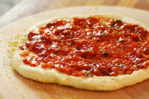
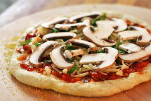

Ingredients:
1. 1/2 cups (355 ml) warm water (105°F-115°F), package (2 1/4 teaspoons) of active dry yeast2. 3/4 cups (490 g) bread flour
3. Tbsp olive oil (omit if cooking pizza in a wood-fired pizza oven)
4. teaspoons salt
5. teaspoon sugar
6. Olive oil
7. Cornmeal (to help slide the pizza onto the pizza stone)
8. Tomato sauce (smooth, or puréed)
9. Firm mozzarella cheese, grated
10. Fresh soft mozzarella cheese, separated into small clumps
11. Fontina cheese, grated
12. Parmesan cheese, grated
13. Feta cheese, crumbled
14. Mushrooms, very thinly sliced if raw, otherwise first sautéed
15. wall peppers, stems and seeds removed, very thinly sliced
16. Italian pepperoncini, thinly sliced
18. Italian sausage, cooked ahead and crumbled
19. Chopped fresh basil
20. Baby arugula, tossed in a little olive oil, added as pizza comes out of the oven Pesto
21. Pepperoni, thinly sliced
22. Onions, thinly sliced raw or caramelized
23. Ham, thinly sliced
Directions:
1.Proof the yeast: Place the warm water in the large bowl of a heavy duty stand mixer. Sprinkle the yeast over the warm water and let it sit for 5 minutes until the yeast is dissolved. After 5 minutes stir if the yeast hasn't dissolved completely. The yeast should begin to foam or bloom, indicating that the yeast is still active and alive. (Note that if you are using "instant yeast" instead of "active yeast", no proofing is required. Just add to the flour in the next step.)2.Make and knead the pizza dough: Using the mixing paddle attachment, mix in the flour, salt, sugar, and olive oil on low speed for a minute. Then replace the mixing paddle with the dough hook attachment. Knead the pizza dough on low to medium speed using the dough hook about 7-10 minutes. If you don't have a mixer, you can mix the ingredients together and knead them by hand. The dough should be a little sticky, or tacky to the touch. If it's too wet, sprinkle in a little more flour.
3.Let the dough rise: Spread a thin layer of olive oil over the inside of a large bowl. Place the pizza dough in the bowl and turn it around so that it gets coated with the oil. At this point you can choose how long you want the dough to ferment and rise. A slow fermentation (24 hours in the fridge) will result in more complex flavors in the dough. A quick fermentation (1 1/2 hours in a warm place) will allow the dough to rise sufficiently to work with. Cover the dough with plastic wrap.


4.Divide the dough into two balls:When the dough is full risen remove the plastic cover from the dough. Dust your hands with flour and push the dough down so it deflates a bit. Divide the dough in half.

5.Sprinkle pizza peel with corn meal, put flattened dough on top: Lightly sprinkle your pizza peel (or flat baking sheet) with corn meal. (The corn meal will act as little ball bearings to help move the pizza from the pizza peel into the oven.) Transfer one prepared flattened dough to the pizza peel.

5.Spread with tomato sauce and sprinkle with toppings: Spoon on the tomato sauce, sprinkle with cheese, and place your desired toppings on the pizza.
 
6.Sprinkle cornmeal on pizza stone, slide pizza onto pizza stone in oven: Sprinkle some cornmeal on the baking stone in the oven (watch your hands, the oven is hot!). Gently shake the peel to see if the dough will easily slide, if not, gently lift up the edges of the pizza and add a bit more cornmeal. Slide the pizza off of the peel and on to the baking stone in the oven.

7.Bake pizza: Bake pizza one at a time until the crust is browned and the cheese is golden, about 10-15 minutes. If you want, toward the end of the cooking time you can sprinkle on a little more cheese.